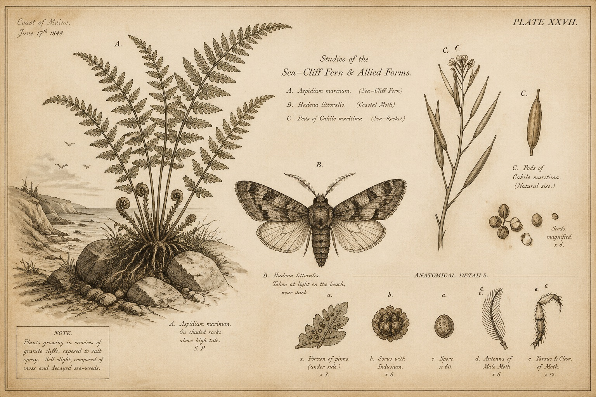
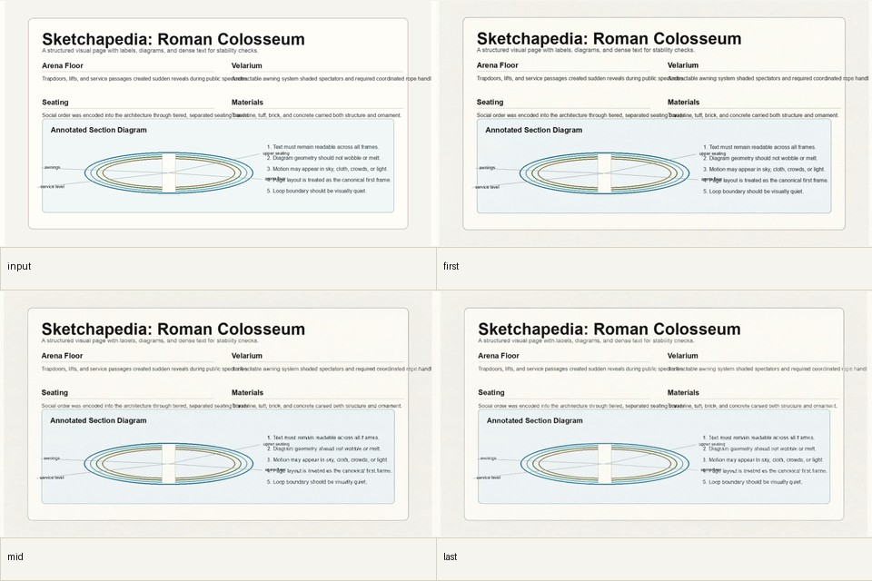
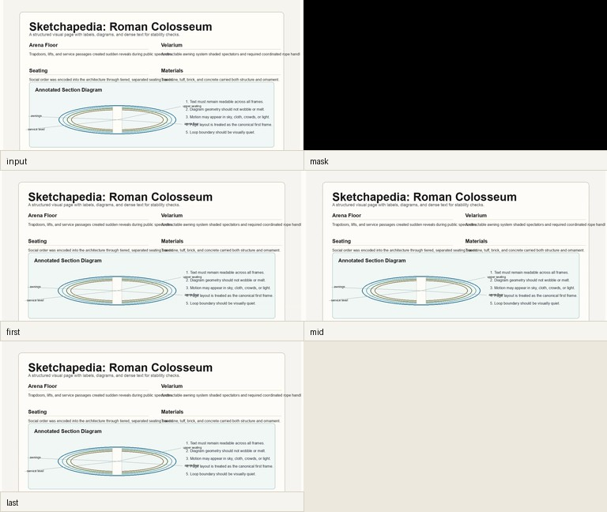
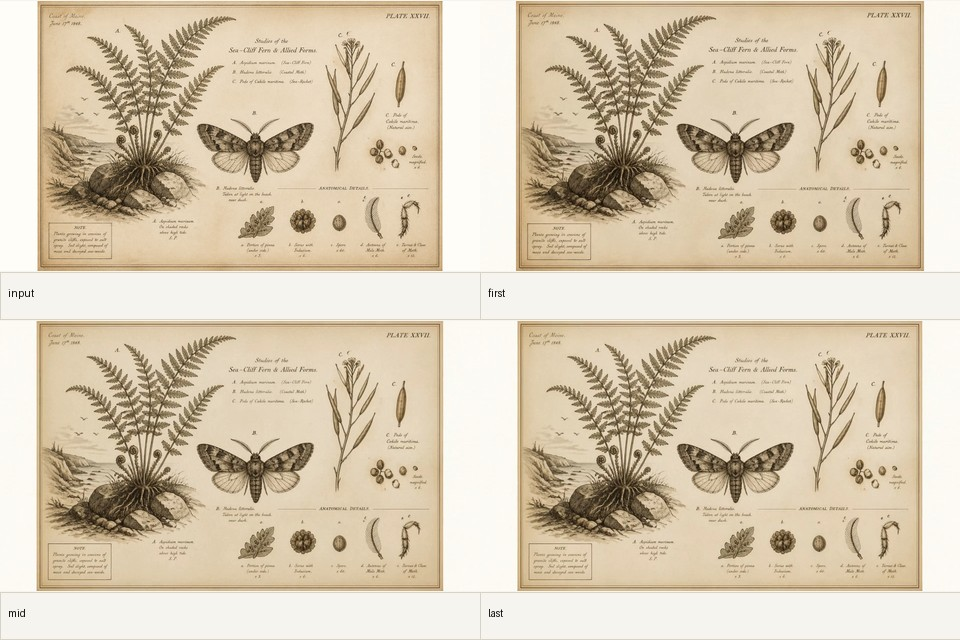
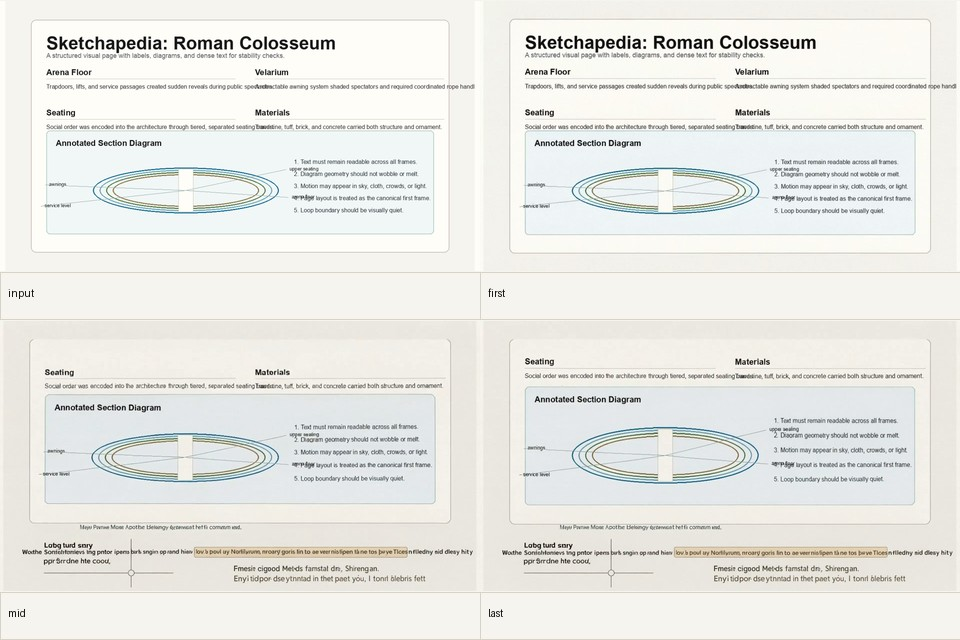
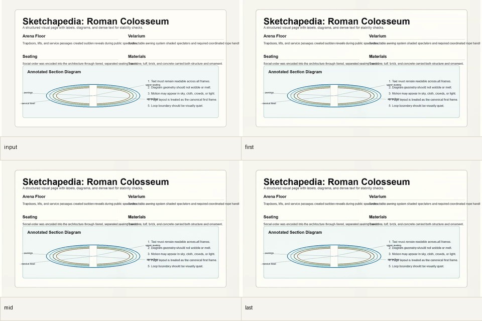
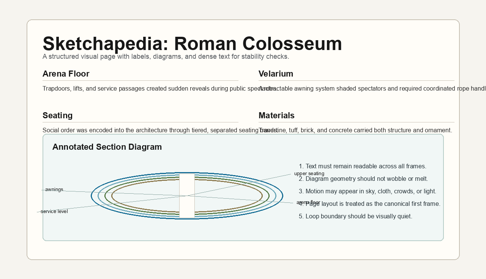

Immediate motion should be deterministic.
Track B generated 960x540 previews in roughly 100-200 ms across page families while preserving text by construction.

Public research retrospective
We tried to make generated pages feel alive without letting video models rewrite the page. The surprising answer was not one model. It was a product architecture.
Current video models are impressive motion priors, but unreliable page renderers.
They can produce beautiful movement, but dense text, labels, charts, margins, and interface state are too important to be left to a model that is free to repaint the document. The page has to remain the source of truth.
What survived contact with the experiments
Track B generated 960x540 previews in roughly 100-200 ms across page families while preserving text by construction.
The best hosted LTX 2.3 Fast result used first and last frame anchors, a 2 second clip, and a strict preservation prompt.
Dense text, naturalist plates, diagrams, and ambient pages need different policies. Generalization here is conditional.
The hard part is not adding motion. It is generating new pixels while preserving semantics, coordinates, and readable text.
Evidence wall
These contact sheets are from the research runs. The interesting pattern is not just success versus failure. It is where control had to be introduced to keep the page identity intact.

Best gated result
The page stayed legible because the generation was strongly constrained: first frame, last frame, short duration, and a strict no-camera prompt.

Instant layer
Not generated video, but fast and stable enough to carry the realtime experience.

Illustration-friendly
Illustration pages tolerate subtle generated texture better than dense documents, but still need family-specific prompts.

Failure mode
Free video generation preserved document-like texture better than the actual document.

Fast but not enough
The 6-10 second Modal runs were faster than hosted LTX, but did not preserve dense page text well enough.
Architecture
The product should not be image -> video model -> page.
That puts text and layout under the control of a system optimized
for plausible motion, not document fidelity.
The stronger architecture keeps a canonical page state, renders immediate motion from controlled layers, then lets video generation compete for a gated background enhancement slot.
What is possible now
The most useful next product is not a single magic prompt. It is a page-aware runtime that decides where generative video is allowed and where the deterministic renderer should remain in charge.

The honest public claim
That is still real progress. The experiments showed where video generation should sit in the system, what to gate, and which page families deserve different treatment.
Read the complete notes